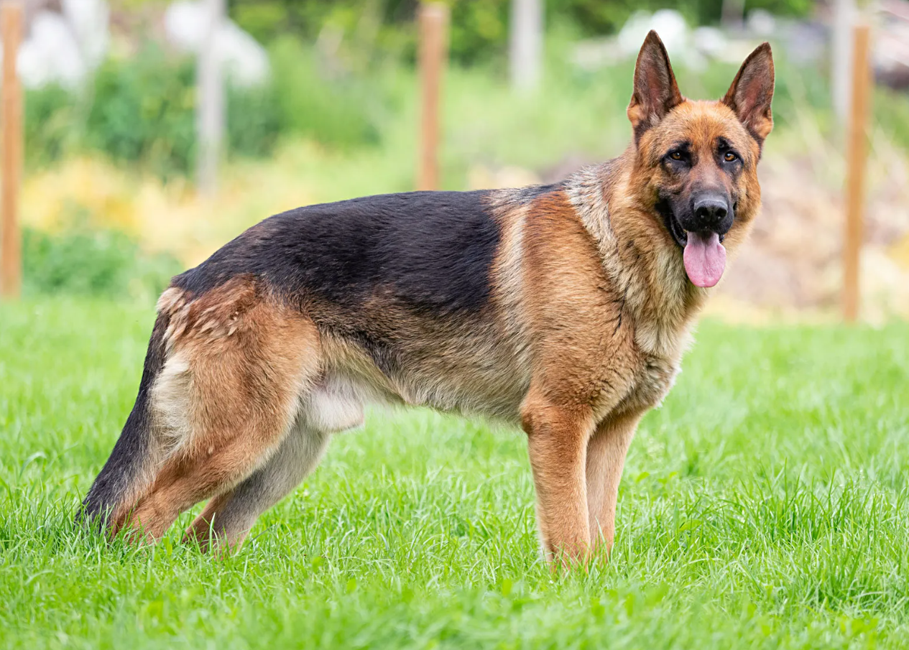

GERMAN
Weight:
75-95 lbs.
Height :
23 in.
25 in.
Length:
Medium .
Color:
Most colors, other than white, are permissible.
Longevity:
10 – 12 yrs.
German personality
German shepherd dogs get along well with children and other pets if raised with them, but in keeping with their guarding instincts, they tend to be leery of strangers. The breed is considered to be smart and easy to train. Some poorly bred German shepherd dogs can be high-strung and nervous. Coupled with poor socialization and inadequate training, over guarding and aggressive behavior are risks.
What to expect
Because German shepherd dogs are large and powerful and have strong guarding instincts, great care should be taken to purchase German shepherds from reputable breeders. Poorly bred dogs are more likely to be nervous.To prevent over guarding and aggressive behavior, German shepherd dogs should be carefully socialized from a young age and be obedience trained. They should be with the family and continually exposed under supervision to people and other pets around the neighborhood they should not be confined to a kennel or backyard either alone or with other dogs.German shepherd dogs are active and like to have something to do. They need ample exercise daily otherwise, they can get into mischief or become high-strung.The dog sheds heavily about twice yearly, and the rest of the time sheds a lesser amount continually. To control shedding and keep the coat nice, brush at least a few times a week.
History of the German
German shepherd dogs are, as their name implies, a breed that originated in Germany. They were developed beginning in the late 1800s by crossing various herding breeds. The breed was subjected to stringent selection and it progressed quickly. In the United Kingdom, the dogs are known as Alsatians because fanciers of the breed there wanted to protect the dog from anti-German sentiments after World War I.German shepherd dogs were introduced in the United States by soldiers returning home from World War I. The breed caught the public eye because of movie stars Strongheart and later, Rin Tin Tin. By World War II German shepherd dogs were the military breed of choice. The first guide dogs were German shepherd dogs. Today, they are one of the most popular dogs in America. In 1999, German shepherd dogs were third on the American Kennel Club's list of the Top 50 Breeds.The German shepherd dog is a herding breed known for its courage, loyalty and guarding instincts. This breed makes an excellent guard dog, police dog, military dog, guide dog for the blind and search and rescue dog. For many families, the German shepherd is also a treasured family pet.